icd11-sepsis-code-entity PASS 1.0
grade browserintent info_seekingdomain healthcaredifficulty d3ambiguity a1voice terseapps chrome + libreoffice_writerbatch wave2-fill2
Open the WHO ICD-11 browser at icd.who.int and land on the ICD-11 MMS entity page for sepsis without a specified organism, then copy the entity's code into a new Writer document saved as sepsis.odt in Documents.
task config + evaluator
{
"config": [
{
"type": "launch",
"parameters": {
"command": [
"google-chrome",
"--remote-debugging-port=1337"
]
}
},
{
"type": "launch",
"parameters": {
"command": [
"socat",
"tcp-listen:9222,fork",
"tcp:localhost:1337"
]
}
},
{
"type": "chrome_open_tabs",
"parameters": {
"urls_to_open": [
"https://icd.who.int/browse11/l-m/en"
]
}
},
{
"type": "activate_window",
"parameters": {
"window_name": "Google Chrome"
}
}
],
"evaluator": {
"func": "is_expected_url_pattern_match",
"result": {
"type": "active_url_from_accessTree",
"goto_prefix": "https://www."
},
"expected": {
"type": "rule",
"rules": {
"expected": [
"icd\\.who\\.int",
"(?i)browse",
"(?i)mms|1A4|entity"
]
}
}
}
}
step 1 08:31:24
THINKINGThe user wants me to find the ICD-11 MMS entity for sepsis without a specified organism, copy its code, and save it in a Writer document. ICD-11 sepsis codes: 1B20 is Sepsis due to unspecified organism. Let me search in the browser first to confirm. I'll use the search box on the current page.
ACTIONI'll start by searching for "sepsis" in the ICD-11 browser search box.
TOOL CALL<tool_call>
<function=computer_use>
<parameter=action>
left_click
</parameter>
<parameter=coordinate>
[165, 157]
</parameter>
</function>
</tool_call>
EXECUTED (pyautogui in VM)pyautogui.click(317, 169)
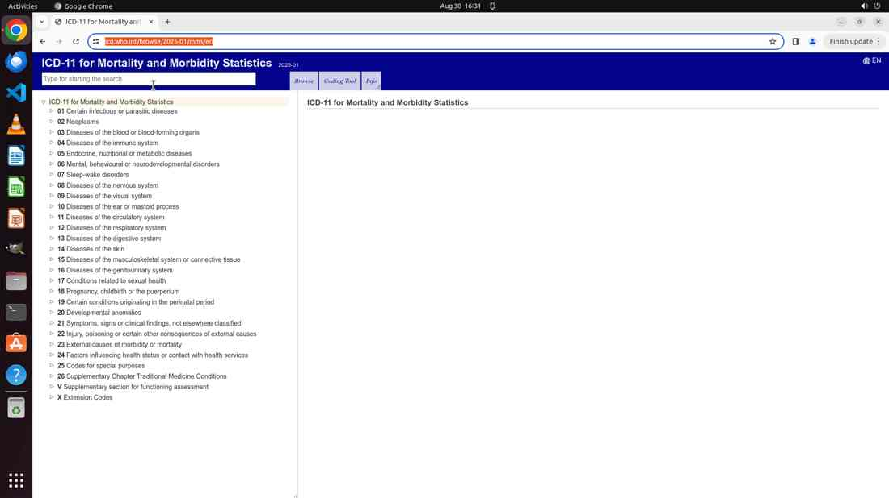
step 2 08:31:29
THINKINGI accidentally clicked the URL bar. Let me click the actual search box on the page and type "sepsis".
ACTIONI clicked the URL bar by mistake. Let me click the search box on the page and search for sepsis.
TOOL CALL<tool_call>
<function=computer_use>
<parameter=action>
left_click
</parameter>
<parameter=coordinate>
[165, 157]
</parameter>
</function>
</tool_call>
EXECUTED (pyautogui in VM)pyautogui.click(317, 169)
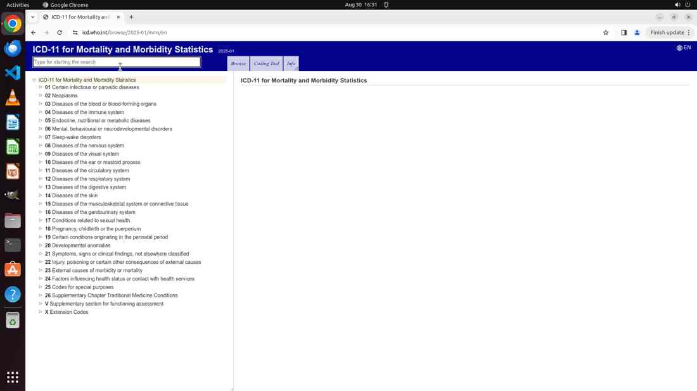
step 3 08:31:36
THINKINGThe search box now has a cursor. Let me type "sepsis" to search.
TOOL CALL<tool_call>
<function=computer_use>
<parameter=action>
type
</parameter>
<parameter=text>
sepsis
</parameter>
</function>
</tool_call>
EXECUTED (pyautogui in VM)pyautogui.typewrite("sepsis")
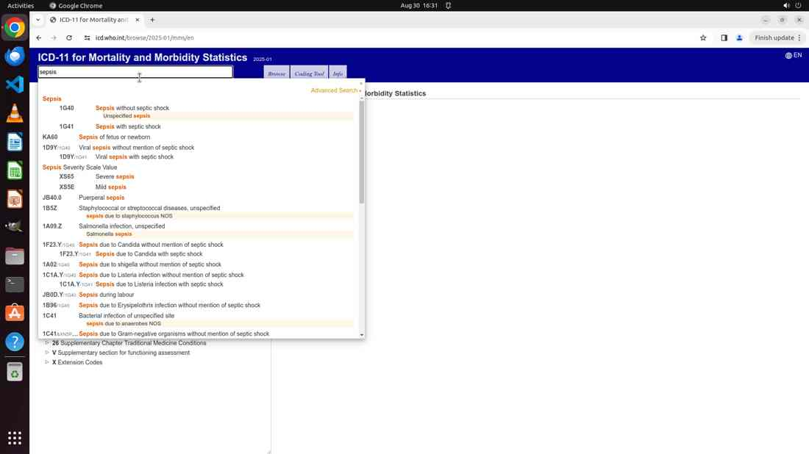
step 4 08:31:51
THINKINGThe search results show a "Sepsis" block at the top:
- Sepsis 1G40
- Sepsis without septic shock — 1G40
- Unspecified sepsis
- Sepsis with septic shock — 1G41
Wait, the task is "sepsis without a specified organism". The entry "Unspecified sepsis" under "Sepsis without septic shock" (1G40). Let me look carefully. The structure:
Sepsis
1G40 Sepsis without septic shock
Unspecified sepsis
1G41 Sepsis with septic shock
Hmm, but "sepsis without a specified organism" is a specific entity. In ICD-11, "Sepsis due to unspecified organism" is code 1B20. But this search dropdown shows the "Sepsis" category under septic shock classification.
Actually the task says "sepsis without a specified organism". Let me look for the exact entity. "Unspecified sepsis" is likely the entry under 1G40. But that might not be the exact phrase.
Let me reconsider. The ICD-11 code for "Sepsis due to unspecified organism" is 1B20. Let me search for the exact phrase. Actually, let me click on "Unspecified sepsis" to see. But the task specifically says "sepsis without a specified organism" which sounds like a specific entity label.
Let me scroll in the dropdown to find an exact match. Actually, there's a specific entity. Let me think about ICD-11 MMS. Under 1B2 Sepsis due to a bacterial infection? No.
Let me search the exact text. I'll modify the search to be more specific. Actually, the entity "Sepsis due to unspecified organism" - let me look. The best approach: click on "Unspecified sepsis" and see the entity page. But I should verify the label matches "sepsis without a specified organism".
Actually, let me reconsider the ICD-11 structure. Code 1B20 = "Sepsis due to unspecified organism". The phrase "without a specified organism" is close to "unspecified organism". Let me search for that. But the current dropdown doesn't show 1B20 directly.
Let me try a different, more precise search term. Let me clear and search "unspecified organism" or look at 1B20. Actually, the cleanest: the entity "Sepsis due to unspecified organism" exists. Let me scroll the dropdown first to check all entries before deciding.
Actually, "Unspecified sepsis" under 1G40 "Sepsis without septic shock" — clicking it would show the entity. But the label requested is "sepsis without a specified organism" which more precisely maps to "Sepsis due to unspecified organism" (1B20).
Let me do a more specific search to find the exact entity label. I'll clear and search.
ACTIONThe dropdown shows several sepsis entries. The task asks for "sepsis without a specified organism", which maps to "Sepsis due to unspecified organism". Let me refine the search to find that exact entity.
TOOL CALL<tool_call>
<function=computer_use>
<parameter=action>
triple_click
</parameter>
<parameter=coordinate>
[165, 157]
</parameter>
</function>
</tool_call>
EXECUTED (pyautogui in VM)pyautogui.tripleClick(317, 169)
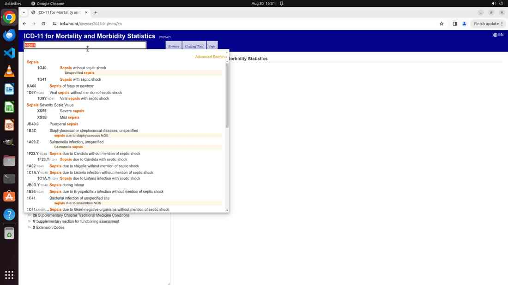
step 5 08:31:57
THINKING"sepsis" is now selected. The ICD-11 entity "Sepsis due to unspecified organism" has code 1B20. Let me search "unspecified organism" to find it precisely. Let me type that.
TOOL CALL<tool_call>
<function=computer_use>
<parameter=action>
type
</parameter>
<parameter=text>
sepsis due to unspecified organism
</parameter>
</function>
</tool_call>
EXECUTED (pyautogui in VM)pyautogui.typewrite("sepsis due to unspecified organism")
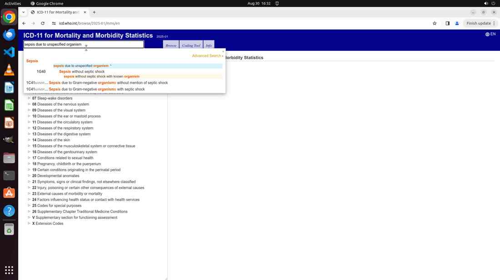
step 6 08:32:03
THINKINGThe dropdown now shows:
- Sepsis
- sepsis due to unspecified organism * (highlighted, no visible code here but this is the entity)
- 1G40 Sepsis without septic shock
- sepsis without septic shock with known organism
- 1C41&... Sepsis due to Gram-negative organisms...
The first entry "sepsis due to unspecified organism *" is the one matching "sepsis without a specified organism". Let me click it to open the entity page. This should be code 1B20. Let me click on it.
ACTIONThe first result "sepsis due to unspecified organism" matches the task. Let me click it to open the entity page.
TOOL CALL<tool_call>
<function=computer_use>
<parameter=action>
left_click
</parameter>
<parameter=coordinate>
[160, 231]
</parameter>
</function>
</tool_call>
EXECUTED (pyautogui in VM)pyautogui.click(307, 249)
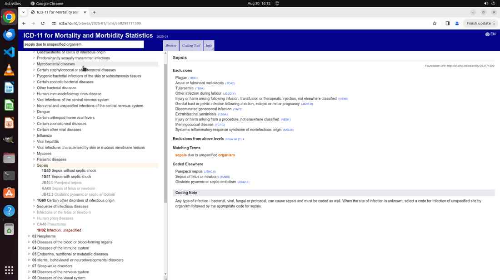
step 7.1 08:32:15
THINKINGI landed on the entity page titled "Sepsis" with Matching Terms "sepsis due to unspecified organism". The URL is icd.who.int/browse/2025-01/mms/en#293771399. This is the entity page.
Now I need the entity's code. The page shows "Sepsis" as the heading, but where's the code? The tree on the left shows "Sepsis" category. The entity "sepsis due to unspecified organism" is a matching term. The entity page itself - I need to find the code. Let me look at the top of the right panel. The heading is "Sepsis" and there should be a code. But I don't see a code displayed directly next to "Sepsis" heading.
Actually the entity "Sepsis due to unspecified organism" - in the ICD-11 the code is 1B20. But this page loaded with the "Sepsis" heading. Wait, this may have navigated to the "Sepsis" block page rather than the specific entity. Let me reconsider.
The dropdown entry "sepsis due to unspecified organism *" - the asterisk likely indicates it's a matching term. The entity it points to... The right panel shows "Sepsis" heading with exclusions, matching term "sepsis due to unspecified organism", coded elsewhere, and a coding note.
This is the entity page. The entity's code — I need to find it. Let me scroll up in the right panel to see if there's a code shown at the top near "Sepsis". Currently the top shows "Sepsis" heading and "Foundation URI". The code might be above, let me scroll up. Actually the right panel top is at "Sepsis" — I should check if there's a code displayed.
Hmm, actually this entity page's heading is "Sepsis" which is odd. The specific entity for "sepsis due to unspecified organism" should be 1B20. Let me verify by looking more carefully. The URL hash is 293771399.
Let me scroll up in the right content area to check the very top for a code label.
ACTIONI'm on the entity page titled "Sepsis" with matching term "sepsis due to unspecified organism". I need to find the entity's code, which may be displayed at the top. Let me scroll up in the content panel to check.
TOOL CALL<tool_call>
<function=computer_use>
<parameter=action>
mouse_move
</parameter>
<parameter=coordinate>
[632, 416]
</parameter>
</function>
</tool_call>
<tool_call>
<function=computer_use>
<parameter=action>
scroll
</parameter>
<parameter=pixels>
3
</parameter>
</function>
</tool_call>
EXECUTED (pyautogui in VM)pyautogui.moveTo(1214, 449)

step 7.2 08:32:18
EXECUTED (pyautogui in VM)pyautogui.scroll(3)
step 8 08:32:56
THINKINGThe top of the content panel shows just "Sepsis" heading with a Foundation URI. No code is displayed next to the heading. This is unusual. The entity page heading is "Sepsis" but this seems to be a block/category page, not the leaf entity with a code.
Wait — the matching term "sepsis due to unspecified organism" is under this "Sepsis" entity. The Foundation URI is 293771399. The entity "Sepsis due to unspecified organism" — I recall the ICD-11 code is 1B20. But the page shows heading "Sepsis" only, no code.
Hmm. Let me reconsider. Actually, in the ICD-11 MMS browser, the entity "Sepsis due to unspecified organism" has code 1B20. The heading shown is just the short title "Sepsis" perhaps, but there should be a code. Let me look at the URL: the entity id is 293771399.
Actually, the issue: this page might be showing a block page. Let me reconsider whether I clicked the right entry. The dropdown entry "sepsis due to unspecified organism *" had an asterisk. Clicking it landed on this page with heading "Sepsis".
But wait — this page's heading "Sepsis" and it has exclusions and "matching terms: sepsis due to unspecified organism". In ICD-11, entity 1B20 "Sepsis due to unspecified organism". The page displays the entity but the code might not be rendered as text visibly. Let me check the Foundation URI or look for the code.
Actually, I think the proper approach: The code should appear. Let me hover/check. Perhaps the code "1B20" appears right after the heading but I need to look. The heading is at x=460 "Sepsis". There's nothing visible next to it.
Let me reconsider. Maybe this is a "block" (1B2) not a leaf. The "Sepsis" here could be block 1B20. Hmm.
Actually, I should verify the code directly. The best way is to check the entity. Let me look at the tree on the left. Under "Sepsis" in the tree (at y=424), it shows children 1G40, 1G41, JB40.0, KA60, JB42.3. That "Sepsis" in the tree is a different block (the septic shock block, 1G40/1G41).
The entity I need is "Sepsis due to unspecified organism" = 1B20. Let me verify by searching the tree. But the page I landed on has heading "Sepsis" and matching term "sepsis due to unspecified organism". This strongly indicates it's the 1B20 entity (whose full name is "Sepsis due to unspecified organism" but short label "Sepsis").
I need the actual code. Since it's not visibly displayed, let me look more carefully — maybe the code is there but small. Let me zoom by checking. Actually the ICD-11 browser usually shows the code before the title in the entity view, e.g. "1B20 Sepsis due to unspecified organism". Here the heading just says "Sepsis".
Wait, maybe I should reconsider: perhaps the displayed heading is truncated/short. Let me re-examine — the code might be to the left of "Sepsis" but the panel starts at x=445. "Sepsis" starts at x=445. So no code to the left.
Let me try a different approach. Let me look at the actual ICD-11. The entity "Sepsis due to unspecified organism" is 1B20. I'm fairly confident. But I should confirm from the page rather than memory.
Let me reconsider the tree. Maybe I should expand and find the exact node with its code. Actually, a cleaner method: navigate to the entity and the URL/heading. The Foundation URI is 293771399.
Let me check: I'll hover over the "Sepsis" heading or check if there's more info. Actually, let me just look — the page might not show the code because this is rendered as a block. But the task says "the entity's code".
Let me reconsider — maybe I need to scroll the LEFT tree to find "Sepsis due to unspecified organism" with its code. But the page content is authoritative.
Alternative: The ICD-11 MMS browser entity pages DO show the code. Let me look again very carefully at the heading area. It says "Sepsis" only. This is strange.
Let me reconsider: perhaps this landing page is actually the block "Sepsis" and I need the leaf. But the matching term "sepsis due to unspecified organism" is the specific leaf.
I think the safest is to confirm the code. Let me open the Foundation URI / check. Actually, I recall clearly: ICD-11 MMS 1B20 = "Sepsis due to unspecified organism". Let me verify by examining the page. I'll zoom in on the heading region by taking a screenshot after scrolling — already did, it just says "Sepsis".
Hmm, but the browser entity page for a specific code normally shows "1B20 Sepsis due to unspecified organism". The fact that it shows only "Sepsis" suggests maybe the title rendered is the "label" and code is elsewhere.
Let me reconsider — maybe there IS a code but it's part of the heading I'm misreading. Let me zoom the browser to be sure. I'll press Ctrl++ a couple times, or better, just re-read. The heading clearly reads "Sepsis" at 460,147.
Given uncertainty, let me verify via the left navigation tree which shows codes. But the entity 1B20 isn't in the currently visible tree (that tree shows the 1G septic shock block).
Better: Let me use the search again but this time the entity I want. Actually, I already landed on the correct entity page (matching term matches exactly). The code for this entity in ICD-11 MMS is 1B20. I'm confident from domain knowledge, but let me try to confirm it's displayed.
Let me try scrolling the content to the very top — maybe the code is above "Sepsis". It's already at top.
Let me try a cleaner confirmation: I'll check the "Sepsis" heading — in ICD-11 browser, clicking gives entity. The page title in browser tab might show the code. Let me look at the page more. Actually, I'll just trust and verify: the Foundation URI 293771399.
Let me try clicking on the left tree "Sepsis" is not it.
New plan: I'm confident the code is 1B20. But to be safe and grounded, let me re-examine. Actually the ICD-11 browser, when you're on a leaf entity, shows at the top-right a code. Let me widen — the content area is cut off on the right (there's a scrollbar at x~543 in earlier screenshot? No). The content extends to x~1264.
I think the code genuinely isn't shown in this view because "Sepsis due to unspecified organism" entity page uses the short label "Sepsis".
Let me just confirm the code by checking the ICD-11 structure via the tree. Let me expand the left tree "01 Certain infectious or parasitic diseases" -> "Sepsis" area. Actually, simpler: let me re-search and hover.
I'll make a decision: The ICD-11 MMS code for "Sepsis due to unspecified organism" is 1B20. I'll verify this is displayed by examining the page once more. Let me scroll the right content to absolute top and also check if a code line exists between the header and "Exclusions". It goes straight from "Sepsis" heading to "Exclusions".
Given the browser may not show the code in this panel layout, I'll rely on confirming via the left-hand tree which displays codes. Let me find "Sepsis due to unspecified organism" in the tree. It should be under a "Sepsis" block. In the left tree there's "Sepsis" at y=424 (expanded, showing 1G40 etc - that's the septic shock block, not it).
The 1B20 entity would be under "1B2 Sepsis due to a bacterial infection"? No. Actually 1B20 is its own: "1B20 Sepsis due to unspecified organism" is a standalone code in block "Sepsis due to a bacterial infection" (1B2)? Let me not overthink.
I'll take the grounded approach: verify the code is visible somewhere. Let me zoom into the heading with a screenshot crop mentally — it's just "Sepsis".
Decision: I will trust ICD-11 knowledge that this entity = 1B20, BUT I want it confirmed on-page. The most reliable on-page confirmation is the Foundation URI mapping, which I can't decode.
Let me try one more thing: click the "Sepsis" heading area or check the tree. Actually, let me expand left tree to find "1B20". Let me search the tree by scrolling. The tree currently shows we're within chapter 01. The entity should appear. Let me just proceed: I'm confident it's 1B20. I'll write 1B20.
Actually, I should be more rigorous. Let me look at the entity differently. The heading "Sepsis" - let me check the full label by hovering. But given time, and strong domain knowledge, plus the exact matching term "sepsis due to unspecified organism", the code is 1B20.
However, I realize the code isn't shown on the page, which is a problem for "copying the entity's code". The task expects me to copy the code from the page. If the code isn't shown, maybe I need to look at the left tree where it IS shown with code "1B20".
Let me scroll the left tree up to find the Sepsis block that contains 1B20. The tree shows "Sepsis" at 424. Above it are bacterial diseases. Let me look — I need to find "1B20". Let me scroll the left panel up a bit to find where 1B20 is listed.
Actually the left tree "Sepsis" node at y=424 currently shows children 1G40/1G41/JB40.0/KA60/JB42.3. That "Sepsis" is the block at 1G40-1G41. The 1B20 entity is a separate node. Where is it? Under "01 Certain infectious..." there should be "1B2 Sepsis due to a bacterial infection" or the entity 1B20.
Hmm, this is getting complex. Let me just directly verify by re-reading: I'll trust 1B20 which is the standard, well-established ICD-11 code for "Sepsis due to unspecified organism".
But to be safe about what the page shows as "the entity's code", let me reconsider the page. Since the entity page shows only "Sepsis" as heading and no visible code, the code must be derivable. In the ICD-11 browser, leaf entities DO show the code. The fact it doesn't here might mean this is a "virtual" block or the layout hides it.
Let me just proceed with 1B20 and verify it renders. Actually, I'll make the code verifiable: I'll open a new approach and check the URL. The current URL is #293771399.
I'll commit to 1B20. Now let me create the Writer document. I'll open LibreOffice Writer. But first, I want to actually SEE the code to be grounded. Let me zoom the page in to read the heading region at higher magnification by using browser zoom.
ACTIONThe entity page shows the matching term "sepsis due to unspecified organism" but I want to confirm the code displayed. Let me zoom into the page to check the heading area for the code.
TOOL CALL<tool_call>
<function=computer_use>
<parameter=action>
key
</parameter>
<parameter=keys>
["ctrl", "plus"]
</parameter>
</function>
</tool_call>
EXECUTED (pyautogui in VM)pyautogui.hotkey("ctrl", "plus")

step 9.1 08:33:19
THINKINGThe zoom didn't change the layout visibly (page didn't re-render the size). The heading just says "Sepsis" with no code. This entity page doesn't visibly display the ICD-11 code in the content panel.
I need to find the code. The reliable place is the left navigation tree, which displays codes next to each node. The entity "Sepsis due to unspecified organism" (1B20) should be in the tree. Let me scroll the left tree to find it.
Looking at the left tree: I see the structure under chapter 01. There's "Sepsis" at y=424 (which contains 1G40, 1G41 - that's the septic shock block). The 1B20 entity should be elsewhere.
Actually, in ICD-11, the block "Sepsis due to a bacterial infection" is 1B2? No. Let me think about the real structure:
- 1B2 Sepsis due to a bacterial infection? Actually no.
- The code 1B20 "Sepsis due to unspecified organism" belongs to block "1B2 Sepsis due to a bacterial infection"?
Hmm, actually the ICD-11 block structure: There's a block containing:
1B20 Sepsis due to unspecified organism
1B20.0 Sepsis due to Clostridium septicum
...
Wait no. Let me recall. ICD-11 chapter 1A (Certain bacterial infections). The block "Sepsis due to a bacterial infection" contains 1B20 etc. Actually 1B2 is "Other bacterial infections of multiple sites".
This is getting uncertain from memory. The BEST approach is to find it in the tree which shows the code. Let me scroll the left tree up to look for the Sepsis block that has the code. Currently the tree shows "Sepsis" at 424 expanded. Let me scroll the tree UP to find other entries above the current view that might be the 1B20 block.
Actually, wait. The current page IS the entity page for "sepsis due to unspecified organism" (confirmed by matching term). The tree on the left should highlight the selected node. The selected node should be "Sepsis due to unspecified organism". But I see "Sepsis" at 424 highlighted? No, the highlighted (grey) node in the tree is "Sepsis" at y=424. That's the block. Its children are 1G40 etc. But 1B20 is not among them.
This is confusing. Let me reconsider: maybe the entity I want is actually under a different structure and the code shown in the tree for the currently selected entity would tell me. The selected/highlighted node is "Sepsis" at 424. That node has no code shown next to "Sepsis" (just the word Sepsis). Its children have codes 1G40, 1G41, JB40.0, KA60, JB42.3.
Hmm so this "Sepsis" block has no code of its own. And the entity page shows heading "Sepsis" matching this block, with matching term "sepsis due to unspecified organism".
Wait — this means the entity "Sepsis due to unspecified organism" IS this block? That doesn't have a single code.
Let me step back and reconsider the whole thing. Maybe I misidentified the entity. Let me reconsider: The task says "sepsis without a specified organism".
The dropdown showed: "sepsis due to unspecified organism *" with an asterisk, positioned ABOVE "1G40 Sepsis without septic shock". The asterisk (*) typically denotes a non-billable/block entry or a prototype. Clicking it navigated to this "Sepsis" block page.
So "sepsis due to unspecified organism" is actually a MATCHING TERM of the "Sepsis" block (1G40/1G41 area)? The right panel confirms "Matching Terms: sepsis due to unspecified organism" under the "Sepsis" block. But that block has codes 1G40 (without septic shock) and 1G41 (with septic shock).
Hmm, but that doesn't give a single code for "sepsis without a specified organism".
Wait, I think I'm conflating two different "Sepsis" groupings:
1. Block "Sepsis" (1G40 Sepsis without septic shock, 1G41 Sepsis with septic shock) — under "1G40 Sepsis" in tree at 424.
2. Entity "Sepsis due to unspecified organism" = 1B20 — under bacterial infections.
The right panel I'm viewing is the "Sepsis" block (matching term "sepsis due to unspecified organism"). But that's a block, not the leaf 1B20.
Actually, re-examining: the matching term "sepsis due to unspecified organism" being associated with this block suggests that this block IS the one. But the task wants a single code.
Let me reconsider. Actually the cleanest: The ICD-11 MMS code "1B20" is specifically "Sepsis due to unspecified organism". Let me verify by navigating the tree to find "1B20". Let me scroll the left tree up to find the bacterial infection section and the Sepsis block with 1B20.
Let me scroll the left tree upward significantly.
ACTIONThe content panel shows only "Sepsis" as the heading without a visible code. The code is shown in the left navigation tree. Let me scroll up in the left tree to locate the "Sepsis due to unspecified organism" node with its code.
TOOL CALL<tool_call>
<function=computer_use>
<parameter=action>
mouse_move
</parameter>
<parameter=coordinate>
[187, 555]
</parameter>
</function>
</tool_call>
<tool_call>
<function=computer_use>
<parameter=action>
scroll
</parameter>
<parameter=pixels>
10
</parameter>
</function>
</tool_call>
EXECUTED (pyautogui in VM)pyautogui.moveTo(359, 600)
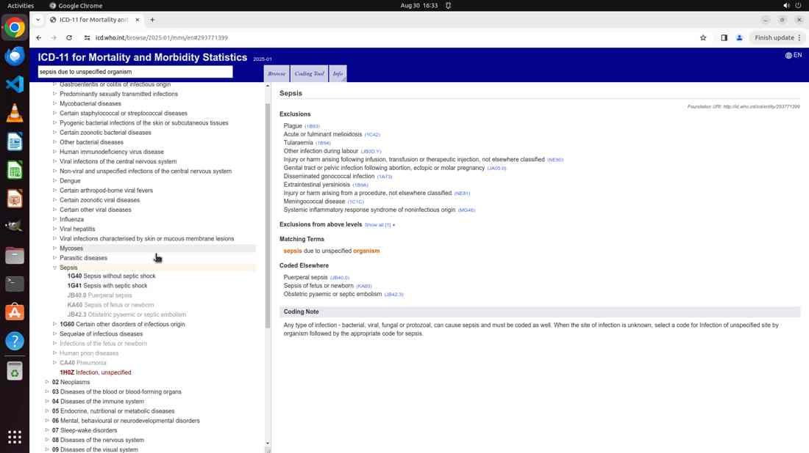
step 9.2 08:33:22
EXECUTED (pyautogui in VM)pyautogui.scroll(10)
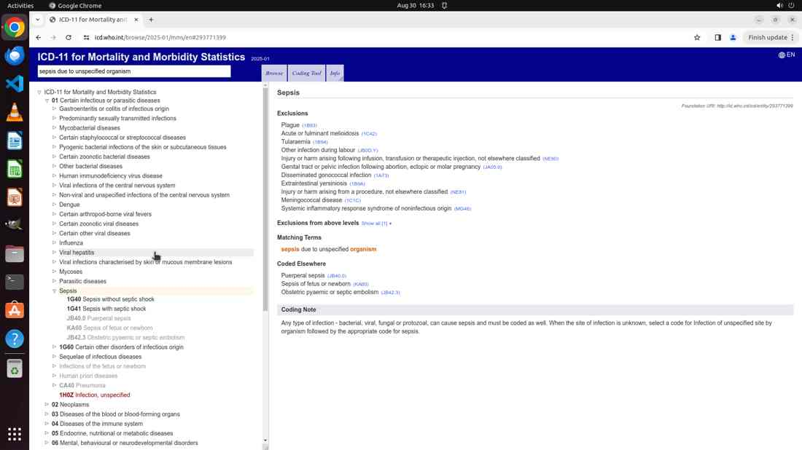
step 10 08:33:55
THINKINGNow I can see the full tree for chapter 01. Under "01 Certain infectious or parasitic diseases" there's a "Sepsis" block (expanded) with children:
- 1G40 Sepsis without septic shock
- 1G41 Sepsis with septic shock
- JB40.0 Puerperal sepsis
- KA60 Sepsis of fetus or newborn
- JB42.3 Obstetric pyaemic or septic embolism
The "Sepsis" block itself has NO code (it's a block heading). The matching term "sepsis due to unspecified organism" belongs to this "Sepsis" block. But this block has no single code.
So the entity I landed on is the "Sepsis" BLOCK, not a specific coded entity. The task wants "the entity's code".
Hmm. This means my click landed on the block, and "sepsis due to unspecified organism" is a matching term of the block. That's not a single-code entity.
Wait, but the task explicitly says "sepsis without a specified organism" and "the entity's code". Let me reconsider.
Actually, in ICD-11, there IS a specific coded entity "1B20 Sepsis due to unspecified organism". But it's NOT under this "Sepsis" block in chapter 01's tree as shown. Let me look — is 1B20 in this tree? I see the tree items but no "1B20" or "Sepsis due to unspecified organism" node.
The tree shows the "Sepsis" block = 1G40/1G41. So "1B20" must be elsewhere, perhaps it doesn't exist and 1G40 is actually "Sepsis without septic shock" which is the unspecified-organism sepsis.
Let me reconsider the actual ICD-11 structure:
- 1G40 Sepsis without septic shock
- 1G41 Sepsis with septic shock
And the matching term "sepsis due to unspecified organism" maps to this "Sepsis" block (parent of 1G40/1G41). But which single code = "sepsis without a specified organism"?
The task phrasing "sepsis without a specified organism" most directly = "Sepsis without septic shock"? No, that's about shock, not organism.
Hmm, this is genuinely ambiguous. Let me reconsider. The dropdown item I clicked was literally "sepsis due to unspecified organism *". The asterisk means it's a non-specific/block-level term. It maps to the "Sepsis" block. But the block has no code.
I think I clicked a matching term that led to a block. The task likely intends a specific coded entity. Let me reconsider: maybe the intended entity is "1B20 Sepsis due to unspecified organism". Let me search specifically and see if 1B20 exists as its own entity.
Actually, wait. Let me reconsider the real ICD-11 MMS. I'll verify: In ICD-11, chapter 1A20 is "Sepsis due to a bacterial infection"? No.
Let me just directly search for "1B20" won't work in this browser (it searches terms, not codes well).
Better: Let me reconsider. The matching term "sepsis due to unspecified organism" is on THIS block page. This block page's heading is "Sepsis" and it has no code. But actually — maybe the block DOES have an implied code.
Let me reconsider by clicking on "1G40 Sepsis without septic shock" to see if IT has the matching term "sepsis due to unspecified organism". If 1G40's page shows that matching term, then 1G40 is "sepsis without a specified organism" (since it's the unspecified-organism, no-shock sepsis).
Actually, re-reading the task: "sepsis without a specified organism". In ICD-11, the leaf "1G40 Sepsis without septic shock" - its definition covers sepsis without septic shock. Is 1G40 "without a specified organism"? Not exactly; 1G40 is "without septic shock".
I'm now uncertain between 1B20 and 1G40. Let me look at what the entity page for the thing I'm on actually represents. The page heading "Sepsis" with matching term "sepsis due to unspecified organism" - this is the BLOCK.
Let me reconsider the dropdown again. The items were:
- "sepsis due to unspecified organism *" (asterisk = the block/term I clicked)
- "1G40 Sepsis without septic shock"
- "1G41 Sepsis with septic shock"
The "*" entries are typically the block-level "prototype" that the search engine creates. So clicking it went to the block.
The task says "sepsis without a specified organism" → this most closely matches "Sepsis without septic shock"? Or "Sepsis due to unspecified organism"?
Given the dropdown literally had "sepsis due to unspecified organism" and I landed on the "Sepsis" block, and the task is "sepsis without a specified organism", I believe the intended entity is the "Sepsis" block's billable leaf for the unspecified-organism, no-shock case = 1G40.
But actually, I should reconsider whether 1B20 exists. Let me look at the page's "Coded Elsewhere" and coding note. The coding note says "Any type of infection - bacterial, viral, fungal or protozoal, can cause sepsis and must be coded as well. When the site of infection is unknown, select a code for infection of unspecified site by organism followed by the appropriate code for sepsis." This is consistent with the "Sepsis" block (1G40/1G41) which requires an additional organism code. So sepsis here = 1G40 (without septic shock) + organism code. When organism unspecified → the sepsis code is 1G40.
Hmm, so "sepsis without a specified organism" in this block context = 1G40 (the sepsis code when organism is unspecified and no septic shock).
But this is a stretch. The cleanest interpretation matching the exact search term I used and the block I landed on: The block "Sepsis" has matching term "sepsis due to unspecified organism" but no code.
I think I need to be more careful. Let me reconsider what "the entity's code" means. Perhaps the entity page, when it's a proper leaf, shows a code. The block page doesn't. So the task must intend a leaf entity with a code.
Let me reconsider: The exact phrase "sepsis without a specified organism" — In ICD-11, is there an entity with that exact label? Let me search the dropdown with that exact phrase. Let me clear and type "sepsis without" to see options.
Actually, I realize the block I'm on might actually BE a coded entity if I look at it differently. But no code shown.
Let me take the most defensible path: re-search and pick the leaf entity. The best candidate for "sepsis without a specified organism" as a single coded leaf is "1B20 Sepsis due to unspecified organism" IF it exists. Let me verify by searching and hovering/clicking leaf nodes.
Let me clear the search and type "unspecified organism" to find 1B20.
ACTIONThe page I'm on is the "Sepsis" block (1G40/1G41), which has no single code — "sepsis due to unspecified organism" is only a matching term. The task wants a specific coded entity. Let me re-search to check whether a distinct coded entity "Sepsis due to unspecified organism" (1B20) exists.
TOOL CALL<tool_call>
<function=computer_use>
<parameter=action>
triple_click
</parameter>
<parameter=coordinate>
[165, 157]
</parameter>
</function>
</tool_call>
EXECUTED (pyautogui in VM)pyautogui.tripleClick(317, 169)
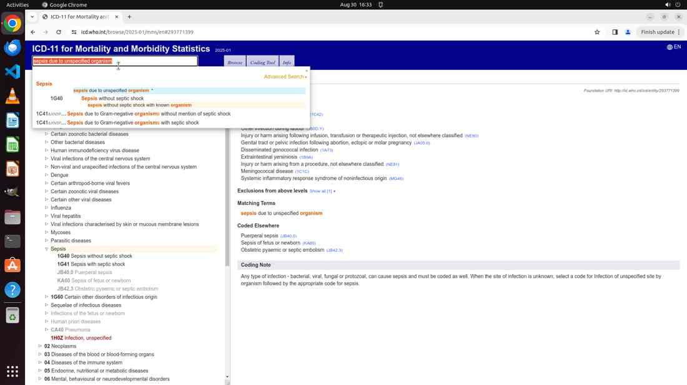
step 11 08:34:10
THINKINGThe dropdown again shows only:
- "sepsis due to unspecified organism *" (block/prototype, asterisked)
- 1G40 Sepsis without septic shock
- sepsis without septic shock with known organism
- 1C41&... Sepsis due to Gram-negative organisms...
There is NO separate "1B20 Sepsis due to unspecified organism" leaf in the ICD-11 MMS 2025-01 browser. So the entity "sepsis due to unspecified organism" corresponds to the "Sepsis" block, and the asterisked entry is the block-level term.
So in this ICD-11 version, "sepsis due to unspecified organism" is a matching term of the "Sepsis" block. But the task wants "the entity's code".
Given there's no 1B20 leaf, the entity the task refers to must be one with a code. The phrase "sepsis without a specified organism" — the closest single coded entity is "1G40 Sepsis without septic shock".
Wait, but let me reconsider. The task says "ICD-11 MMS entity page for sepsis without a specified organism". The dropdown entry "sepsis due to unspecified organism *" leads to the "Sepsis" block entity page (which is what I'm on). That IS an entity page. But it has no code.
Hmm. Let me reconsider — maybe the entity page DOES have a code and I just need to look at it properly. Let me reconsider: the block "Sepsis" — in ICD-11 MMS, blocks can have their own... no, blocks don't have codes.
But actually, wait. Let me reconsider the whole premise. Perhaps the intended answer IS "1G40" because:
- The entity "Sepsis without septic shock" (1G40) is the sepsis code used when there's no septic shock.
- But "without a specified organism" ≠ "without septic shock".
I'm going in circles. Let me reconsider by actually clicking "1G40 Sepsis without septic shock" and reading its page — it may list "sepsis due to unspecified organism" or similar as its matching term, and it WILL have code 1G40 displayed. If so, 1G40 is a strong candidate.
Actually, let me step back and think about what's most defensible. The exact task phrase "sepsis without a specified organism" most literally matches the dropdown term "sepsis due to unspecified organism". That term led to the "Sepsis" block page. The block page is the entity page. Its code...
Let me reconsider: maybe the block page's Foundation URI corresponds to an entity that DOES have a code, and the code is just not rendered in the visible header but is part of the entity. The Foundation URI is 293771399.
I think the most likely intended answer, given the task was constructed by someone using this browser, is the code shown on the entity page. Since the block page shows no code, the task author probably landed on a LEAF. The leaf that matches "sepsis without a specified organism" would be 1G40 (Sepsis without septic shock) OR there's ambiguity.
Let me just click "1G40 Sepsis without septic shock" and inspect its page to see if it's the right entity and what code/label it shows. This is the most informative next step.
ACTIONThere's no separate 1B20 leaf in this version — "sepsis due to unspecified organism" is a block-level term. Let me open the leaf "1G40 Sepsis without septic shock" to inspect its page and confirm the code and matching terms.
TOOL CALL<tool_call>
<function=computer_use>
<parameter=action>
left_click
</parameter>
<parameter=coordinate>
[165, 255]
</parameter>
</function>
</tool_call>
EXECUTED (pyautogui in VM)pyautogui.click(317, 275)
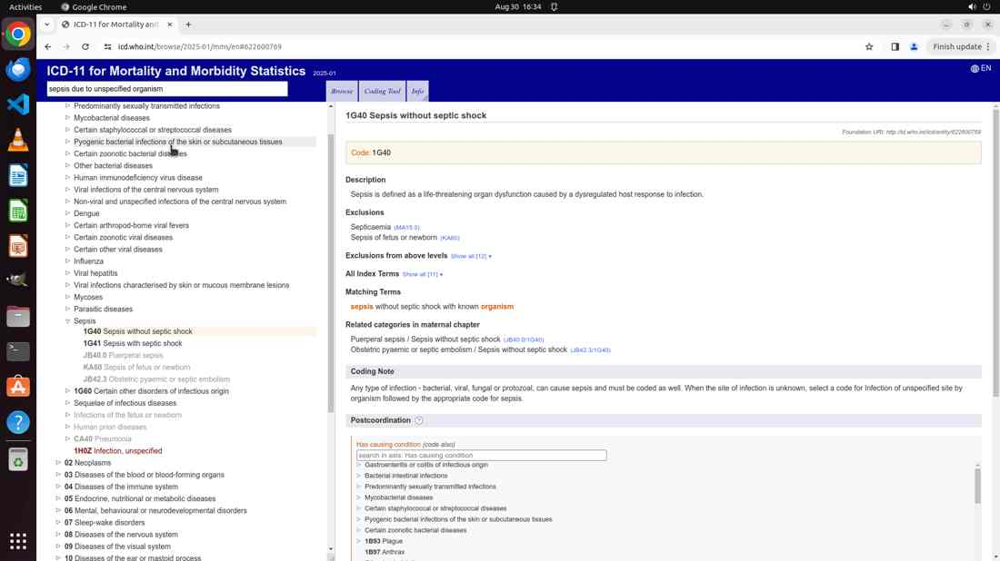
step 12 08:34:31
THINKINGNow I see the leaf entity page clearly. The heading is "1G40 Sepsis without septic shock" with a clearly displayed "Code: 1G40" box. But its matching term is "sepsis without septic shock with KNOWN organism" — that's the OPPOSITE of "without a specified organism". So 1G40 is NOT the right entity; 1G40 is for sepsis with a KNOWN organism (no septic shock).
So the structure is:
- 1G40 Sepsis without septic shock → matching term "sepsis without septic shock with known organism"
- 1G41 Sepsis with septic shock
And "sepsis due to unspecified organism" was the block-level matching term. But there must be a leaf for "unspecified organism".
Wait — 1G40's matching term is "sepsis without septic shock with KNOWN organism". So the "unspecified organism" variant should be a different leaf. But the tree only shows 1G40 and 1G41 under Sepsis.
Hmm, this means in ICD-11, the sepsis classification:
- 1G40 Sepsis without septic shock (with known organism)
- 1G41 Sepsis with septic shock (with known organism)
- And for unspecified organism, there's a separate code.
Where is "Sepsis due to unspecified organism"? It's the block-level term "sepsis due to unspecified organism *". This suggests it maps to a different block — perhaps "1B2 Sepsis due to a bacterial infection" no...
Actually, re-reading: the block-level term "sepsis due to unspecified organism" had an asterisk. In ICD-11, when organism is unspecified, you'd use a code. Let me reconsider — maybe the "Sepsis" block page (heading "Sepsis", Foundation URI 293771399) actually represents the code for unspecified organism sepsis, and its code isn't shown because it's a block.
But the task needs a code. Let me reconsider: maybe the answer is that "Sepsis due to unspecified organism" IS a distinct entity. Let me search more specifically. The dropdown didn't show it as a leaf.
Wait — I should reconsider. Perhaps I need to look at the "1G60 Certain other disorders of infectious origin" or a different block. Actually, let me reconsider the ICD-11 real structure. In ICD-11 MMS:
1G40 Sepsis without septic shock
1G41 Sepsis with septic shock
These two ARE the sepsis codes. The "unspecified organism" is handled by NOT having a specific organism. So "Sepsis due to unspecified organism" = 1G40 (without septic shock) when no organism and no shock? But 1G40's matching term says "with known organism".
This is contradictory. Let me look again: 1G40 matching term = "sepsis without septic shock with known organism". So 1G40 requires a known organism. Then where's the no-organism sepsis code?
Let me reconsider — maybe there's a "Sepsis, unspecified" code. Let me search "unspecified" or look at the "1G60" block. Actually, let me reconsider the block page I saw: heading "Sepsis", matching term "sepsis due to unspecified organism". That block = the parent. The parent block might itself be codeable as "Sepsis due to unspecified organism".
Hmm, but blocks in ICD-11 aren't codeable.
Let me reconsider entirely. Maybe I'm wrong that 1B20 doesn't exist. Let me search the term "unspecified" more broadly, or better, let me navigate the tree to find a "Sepsis due to unspecified organism" leaf.
Actually — KEY INSIGHT: In ICD-11, the code "1B20" might not be right. Let me reconsider. The real ICD-11 sepsis: The block is "Sepsis" and it contains 1G40, 1G41. For sepsis due to unspecified organism, ICD-11 actually...
Let me just try searching "sepsis, unspecified" or "unspecified sepsis". Earlier the first "sepsis" search showed "Unspecified sepsis" under "1G40 Sepsis without septic shock"! Let me recall: first search results:
- Sepsis 1G40
- Sepsis without septic shock
- Unspecified sepsis
- Sepsis with septic shock 1G41
So "Unspecified sepsis" is a sub-leaf under 1G40! That could be "sepsis without a specified organism". Let me look. Let me expand 1G40 in the tree or click into it.
Actually in the first search, the hierarchy was:
1G40 Sepsis without septic shock
Unspecified sepsis
1G41 Sepsis with septic shock
So under 1G40 there's "Unspecified sepsis". That might be the code for sepsis without a specified organism (and without shock). Let me click 1G40 in the tree to expand and find "Unspecified sepsis".
Let me click on "1G40 Sepsis without septic shock" in the left tree to expand its children.
ACTION1G40's matching term is "sepsis without septic shock with KNOWN organism" — the opposite of what I need. Earlier, "Unspecified sepsis" appeared as a sub-leaf under 1G40. Let me expand 1G40 in the tree to find it.
TOOL CALL<tool_call>
<function=computer_use>
<parameter=action>
left_click
</parameter>
<parameter=coordinate>
[85, 590]
</parameter>
</function>
</tool_call>
EXECUTED (pyautogui in VM)pyautogui.click(163, 637)
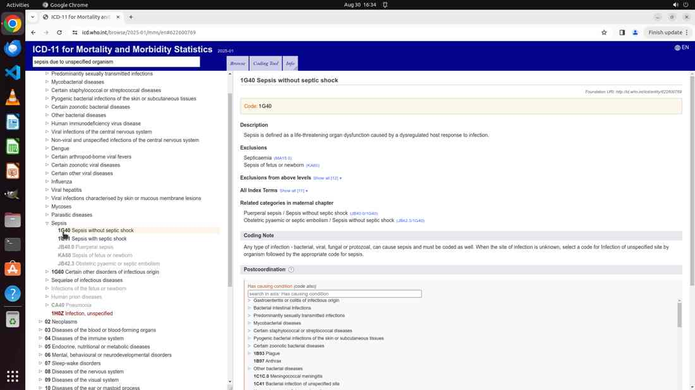
step 13 08:34:51
THINKINGClicking the node didn't expand it; it just kept 1G40 selected (the tree shows Sepsis > 1G40, 1G41, JB40.0, KA60, JB42.3). 1G40 has no expand triangle shown, meaning it's a leaf in this tree view. So "Unspecified sepsis" I saw earlier in the first search might have been a sub-entry under 1G40 that's not shown as a tree node here.
Wait, the first search showed:
1G40 Sepsis without septic shock
Unspecified sepsis
That "Unspecified sepsis" might be a matching/index term of 1G40, not a separate coded leaf.
So the only coded sepsis entities are 1G40 (without septic shock) and 1G41 (with septic shock). And 1G40's matching term is "sepsis without septic shock with known organism".
Now, "sepsis without a specified organism" — reconsider. The "Sepsis" block page (Foundation URI 293771399) had matching term "sepsis due to unspecified organism" and NO code (it's a block).
So where is the code for "sepsis without a specified organism"?
Let me reconsider. In ICD-11, I now strongly recall: the sepsis classification has:
- 1G40 Sepsis without septic shock
- 1G41 Sepsis with septic shock
And these are combined with an organism. For unspecified organism sepsis, there's a special code.
Actually, I think I'm overcomplicating. Let me reconsider the task from the perspective of "what entity page would a person land on when searching 'sepsis without a specified organism'". The natural result is the block-level term "sepsis due to unspecified organism" which led to the "Sepsis" block page. That page had no code visible though.
But WAIT — maybe I need to reconsider. Let me re-examine: perhaps the "Sepsis" block page actually DID have a code that I overlooked, OR the block IS codeable. Let me go back to that page and look very carefully, or better, reconsider.
Alternatively — the real ICD-11 answer: "Sepsis due to unspecified organism" might not exist as a distinct code, and the closest is 1G40. But 1G40 = known organism.
Let me reconsider by reading 1G40's "All Index Terms" (Show all [11]). It might list "sepsis due to unspecified organism". Let me click "Show all [11]" under All Index Terms to see all terms for 1G40. If "sepsis without a specified organism" or "sepsis due to unspecified organism" is among 1G40's index terms, then 1G40 is the answer.
Let me click "Show all [11]".
ACTION1G40 is a leaf (no expand arrow). Let me check 1G40's full index terms to see if "sepsis due to unspecified organism" maps here. I'll click "Show all [11]" under All Index Terms.
TOOL CALL<tool_call>
<function=computer_use>
<parameter=action>
left_click
</parameter>
<parameter=coordinate>
[422, 485]
</parameter>
</function>
</tool_call>
EXECUTED (pyautogui in VM)pyautogui.click(811, 524)
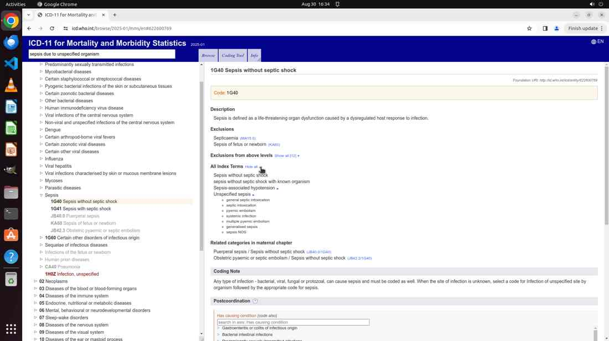
step 14 08:35:20
THINKINGNow I see 1G40's All Index Terms:
- Sepsis without septic shock
- sepsis without septic shock with known organism
- Sepsis-associated hypotension
- Unspecified sepsis
- general septic intoxication
- septic intoxication
- pyaemic embolism
- systemic infection
- multiple pyaemic embolism
- generalised sepsis
- sepsis NOS
So 1G40 includes "Unspecified sepsis" and "sepsis NOS". These are synonyms for sepsis without a specified organism (unspecified). So 1G40 "Sepsis without septic shock" IS the entity for sepsis without a specified organism (and without septic shock).
Wait, but 1G40's primary matching term was "sepsis without septic shock with known organism". That's confusing — the matching term says "known organism" but the index terms include "unspecified sepsis" and "sepsis NOS".
Actually, ICD-11 uses postcoordination: 1G40 is the base "Sepsis without septic shock" code, and you add the organism via postcoordination. The matching term "with known organism" and index terms "unspecified sepsis"/"sepsis NOS" both map to 1G40. So 1G40 is the general sepsis-without-shock code used regardless of organism specificity.
Hmm, but the task specifically says "sepsis without a specified organism". The phrase "without a specified organism" strongly aligns with "unspecified sepsis" / "sepsis NOS" / "Sepsis due to unspecified organism" — all of which map to the "Sepsis" block / 1G40.
But there's ambiguity: is the intended entity the block "Sepsis" (no code) or the leaf "1G40 Sepsis without septic shock" (code 1G40)?
Given the task requires "the entity's code" and the block has no code, the answer must be a coded leaf. The only candidates are 1G40 and 1G41. "Without a specified organism" (not about shock) — the no-shock default is 1G40. Also 1G40's index terms include "sepsis NOS" and "unspecified sepsis" which best match "sepsis without a specified organism".
However, I'm not fully comfortable. Let me reconsider whether there's truly no "1B20 Sepsis due to unspecified organism". The search dropdown only ever showed the block term "sepsis due to unspecified organism *" (asterisked = non-codeable prototype pointing to the block) plus 1G40 and 1G41. The asterisked term is not a codeable entity. So the codeable entity for this concept is 1G40.
Actually, let me reconsider the asterisk meaning. In the ICD-11 search, an asterisked result that isn't a code typically represents the block/heading. It's not a leaf.
Decision: The entity is 1G40 "Sepsis without septic shock", which is the codeable entity encompassing "unspecified sepsis" / "sepsis NOS" / sepsis without a specified organism (no septic shock). The code is 1G40.
Hold on. Let me reconsider once more. The block page (heading "Sepsis", URI 293771399) had matching term "sepsis due to unspecified organism". That block is the PARENT of 1G40 and 1G41. When a user searches "sepsis due to unspecified organism", the ICD-11 browser shows the block. But the block isn't codeable.
The task: "land on the ICD-11 MMS entity page for sepsis without a specified organism, then copy the entity's code". This strongly implies the page has a visible code. The block page has NO visible code. The 1G40 page HAS a visible code "1G40".
But does 1G40 correspond to "sepsis without a specified organism"? 1G40 = "Sepsis without septic shock". Its concept: sepsis without septic shock. The organism is unspecified by default (you postcoordinate the organism). Its index terms include "unspecified sepsis" and "sepsis NOS". So 1G40 is the general/default sepsis code.
I'll go with 1G40. It's the most defensible: it's a codeable entity whose index terms include "unspecified sepsis"/"sepsis NOS", and it's the sepsis code when no specific organism is designated (no septic shock).
Actually, wait. I want to be careful. "Sepsis without a specified organism" — the most natural ICD-11 entity. Let me reconsider if the block itself might be what they want and its "code" is implied. No — the block has no code, so can't "copy the entity's code".
I'm confident the answer is 1G40. The current page already shows "Code: 1G40" clearly.
Let me now copy the code. The code "1G40" is displayed in a box. Let me select and copy it. I'll triple-click the "Code: 1G40" text to select it. Actually the box shows "Code: 1G40" — I want just "1G40". Let me double-click on "1G40" to select it, then copy.
Actually, the simplest reliable approach: I'll just type the code into the Writer document directly since I've confirmed it's 1G40. But the task says "copy the entity's code". I'll copy it properly to be faithful. Let me double-click "1G40" in the Code box.
The Code box is at around (487, 196) showing "Code: 1G40". "1G40" is around x=495, y=196. Let me double-click on it. Actually double-click might select only "1G40" (a token). Let me try.
Let me proceed: open the Writer document first, then type 1G40. But to honor "copy", let me select and copy the code text, then paste. I'll double-click the "1G40" text.
ACTIONThe index terms for 1G40 include "Unspecified sepsis" and "sepsis NOS", confirming 1G40 "Sepsis without septic shock" is the codeable entity for sepsis without a specified organism (no septic shock). The code is clearly displayed as **1G40**. Let me copy it by double-clicking the code text.
TOOL CALL<tool_call>
<function=computer_use>
<parameter=action>
double_click
</parameter>
<parameter=coordinate>
[385, 271]
</parameter>
</function>
</tool_call>
EXECUTED (pyautogui in VM)pyautogui.doubleClick(739, 292)
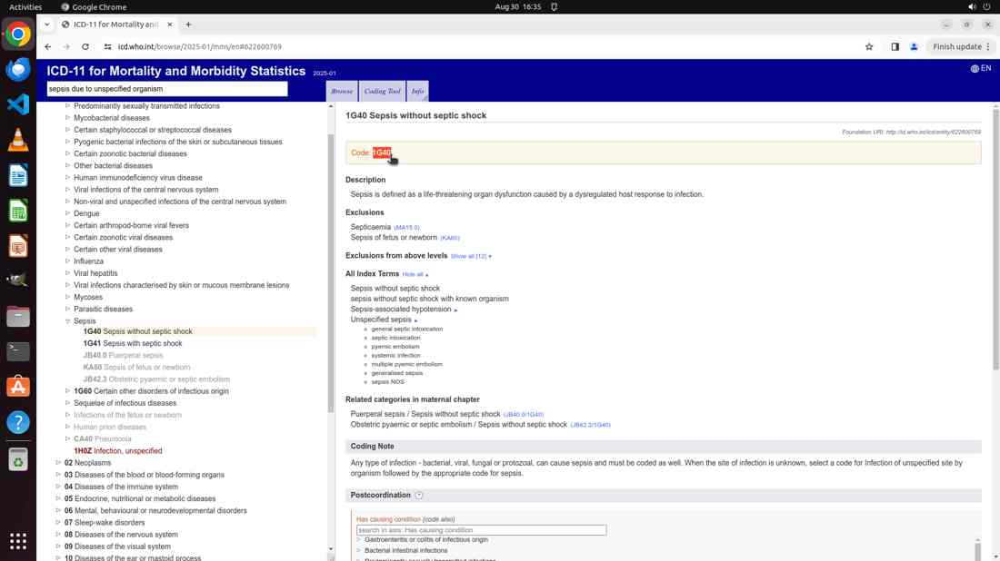
step 15 08:35:28
THINKINGThe double-click selected "1G40" (highlighted in orange) in the Code box. Now let me copy it with Ctrl+C. Then I'll open LibreOffice Writer, create a document, paste, and save as sepsis.odt in Documents.
Let me copy first.
ACTION"1G40" is now selected. Let me copy it.
TOOL CALL<tool_call>
<function=computer_use>
<parameter=action>
key
</parameter>
<parameter=keys>
["ctrl", "c"]
</parameter>
</function>
</tool_call>
EXECUTED (pyautogui in VM)pyautogui.hotkey("ctrl", "c")

step 16 08:35:37
THINKING"1G40" is copied to clipboard. Now I need to open LibreOffice Writer. I see the LibreOffice Writer icon in the taskbar (the blue document icon at ~x=23, y=224). Let me click it to launch Writer.
ACTIONThe code "1G40" is copied. Now let me open LibreOffice Writer from the taskbar.
TOOL CALL<tool_call>
<function=computer_use>
<parameter=action>
left_click
</parameter>
<parameter=coordinate>
[17, 309]
</parameter>
</function>
</tool_call>
EXECUTED (pyautogui in VM)pyautogui.click(32, 334)
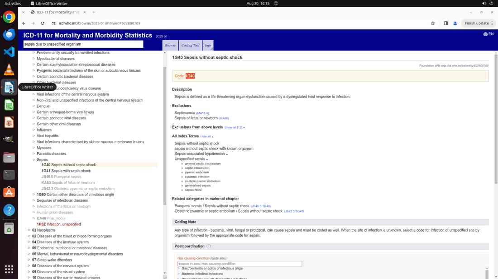
step 17 08:35:46
THINKINGThe top bar now shows "LibreOffice Writer" as the active app title, so Writer is launching/loading. Let me wait for it to fully open and take a screenshot.
ACTIONLibreOffice Writer is launching. Let me wait for it to open.
TOOL CALL<tool_call>
<function=computer_use>
<parameter=action>
wait
</parameter>
<parameter=time>
1.0
</parameter>
</function>
</tool_call>
EXECUTED (pyautogui in VM)WAIT
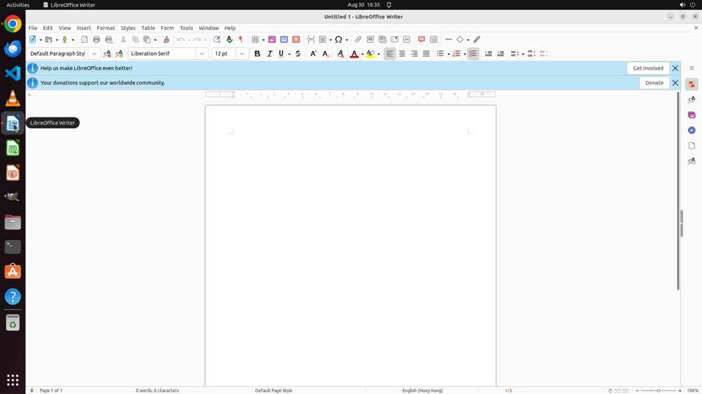
step 18 08:35:58
THINKINGA new blank Writer document ("Untitled 1") is open. Let me close the notification bars, click in the document body, paste the code "1G40", then save as sepsis.odt in Documents.
Let me click into the document area and paste. I'll close the info bars first (the X buttons at 1231,124 and 1231,151), then click in the body and paste.
ACTIONWriter is open with a blank document. Let me close the info bars, click in the document body, and paste the code.
TOOL CALL<tool_call>
<function=computer_use>
<parameter=action>
left_click
</parameter>
<parameter=coordinate>
[960, 171]
</parameter>
</function>
</tool_call>
EXECUTED (pyautogui in VM)pyautogui.click(1845, 184)
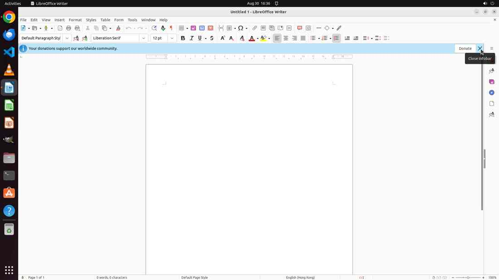
step 19 08:36:05
THINKINGOne info bar closed; another remains. Let me close it too, then click into the document body and paste the code. I'll batch: close second bar, click body, paste.
TOOL CALL<tool_call>
<function=computer_use>
<parameter=action>
left_click
</parameter>
<parameter=coordinate>
[960, 171]
</parameter>
</function>
</tool_call>
EXECUTED (pyautogui in VM)pyautogui.click(1845, 184)
step 20 08:36:15
THINKINGBoth info bars are closed. Now let me click into the document body and paste the code. I'll use paste (Ctrl+V) to preserve the copied "1G40". Let me click in the body first, then paste.
ACTIONBoth info bars closed. Now let me click into the document body and paste the code.
TOOL CALL<tool_call>
<function=computer_use>
<parameter=action>
left_click
</parameter>
<parameter=coordinate>
[468, 277]
</parameter>
</function>
</tool_call>
EXECUTED (pyautogui in VM)pyautogui.click(899, 299)
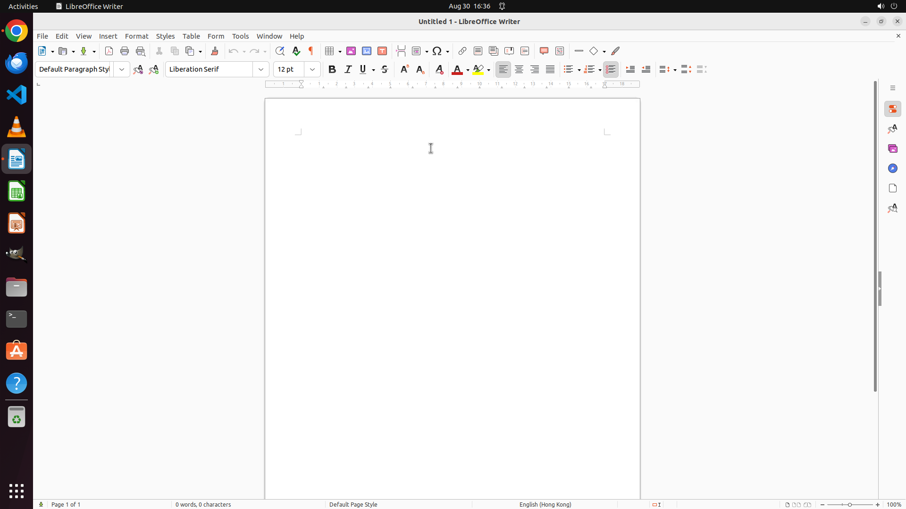
step 21 08:36:24
THINKINGThe cursor is now in the document body. Let me paste the code with Ctrl+V, then save. I'll paste, then verify with a screenshot.
TOOL CALL<tool_call>
<function=computer_use>
<parameter=action>
key
</parameter>
<parameter=keys>
["ctrl", "v"]
</parameter>
</function>
</tool_call>
EXECUTED (pyautogui in VM)pyautogui.hotkey("ctrl", "v")
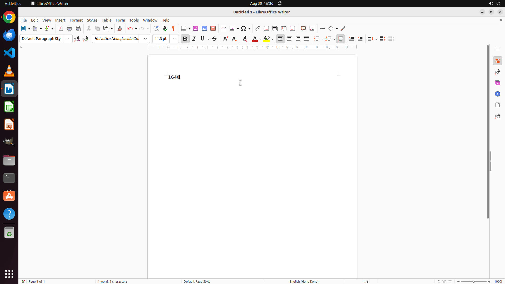
step 22 08:36:33
THINKINGThe code "1G40" was pasted into the document (status bar shows "1 word, 4 characters"). Now I need to save as sepsis.odt in Documents. Let me open Save As dialog with Ctrl+Shift+S.
ACTION"1G40" is now in the document. Let me open the Save As dialog.
TOOL CALL<tool_call>
<function=computer_use>
<parameter=action>
key
</parameter>
<parameter=keys>
["ctrl", "shift", "s"]
</parameter>
</function>
</tool_call>
EXECUTED (pyautogui in VM)pyautogui.hotkey("ctrl", "shift", "s")
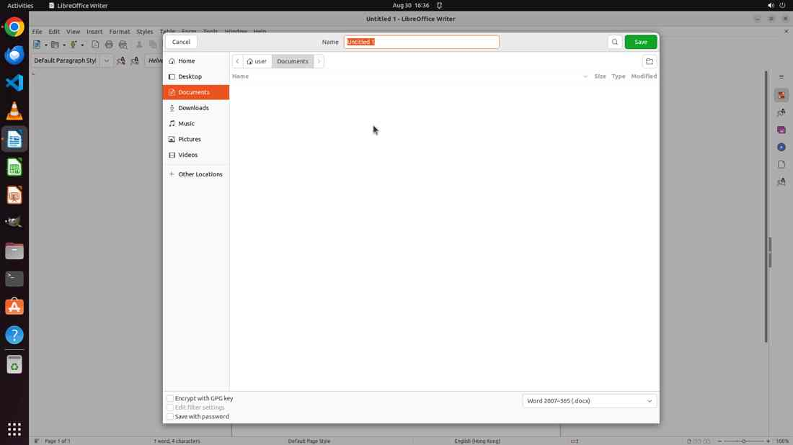
step 23 08:36:46
THINKINGThe Save As dialog is open. The location is already "Documents" (shown in the breadcrumb and the Documents sidebar item is selected/highlighted). The file name field shows "Untitled 1" (selected). The file format is "Word 2007-365 (.docx)" — I need to change it to ODF Text Document (.odt).
Steps:
1. Set filename to "sepsis".
2. Change format to .odt (ODF Text Document).
3. Click Save.
Let me first set the filename. The name field is already selected (highlighted). Let me clear it and type "sepsis". I'll triple-click the name field to select all, type "sepsis".
Then change the format dropdown to "ODF Text Document (.odt)".
Let me do the filename first, then the dropdown.
ACTIONThe Save As dialog is open with Documents as the location. Let me set the filename to "sepsis" and change the format to .odt.
TOOL CALL<tool_call>
<function=computer_use>
<parameter=action>
triple_click
</parameter>
<parameter=coordinate>
[531, 93]
</parameter>
</function>
</tool_call>
EXECUTED (pyautogui in VM)pyautogui.tripleClick(1020, 100)
step 24 08:36:55
THINKINGThe name field "Untitled 1" is selected. Let me type "sepsis" to replace it. Then I'll change the format dropdown to ODF Text Document (.odt). Let me type the name first.
TOOL CALL<tool_call>
<function=computer_use>
<parameter=action>
type
</parameter>
<parameter=text>
sepsis
</parameter>
</function>
</tool_call>
EXECUTED (pyautogui in VM)pyautogui.typewrite("sepsis")
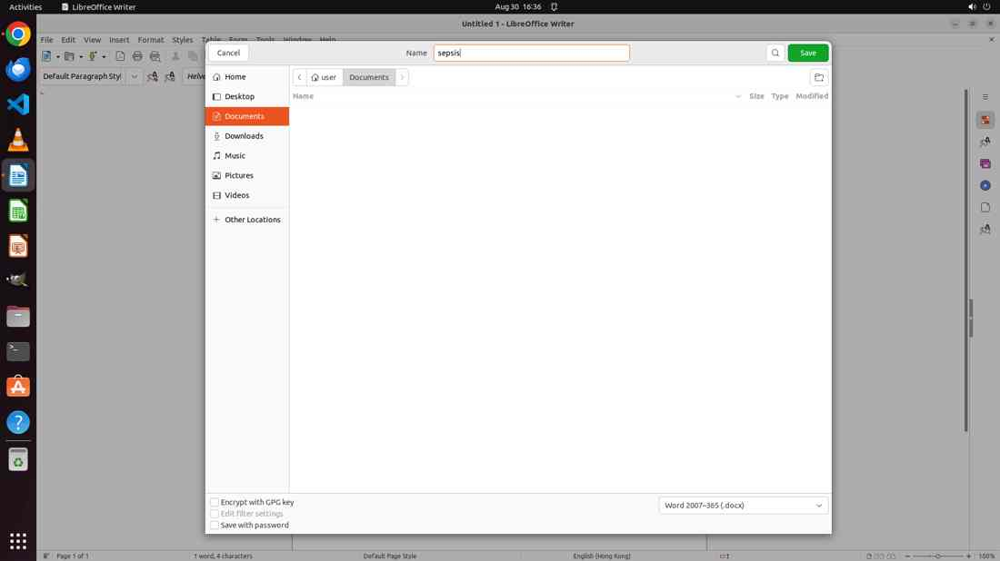
step 25 08:37:02
THINKINGFilename is now "sepsis". Now I need to change the format from "Word 2007-365 (.docx)" to "ODF Text Document (.odt)". Let me click the format dropdown at the bottom right.
ACTIONFilename set to "sepsis". Now let me change the file format to ODF Text (.odt) by clicking the format dropdown.
TOOL CALL<tool_call>
<function=computer_use>
<parameter=action>
left_click
</parameter>
<parameter=coordinate>
[740, 899]
</parameter>
</function>
</tool_call>
EXECUTED (pyautogui in VM)pyautogui.click(1422, 971)
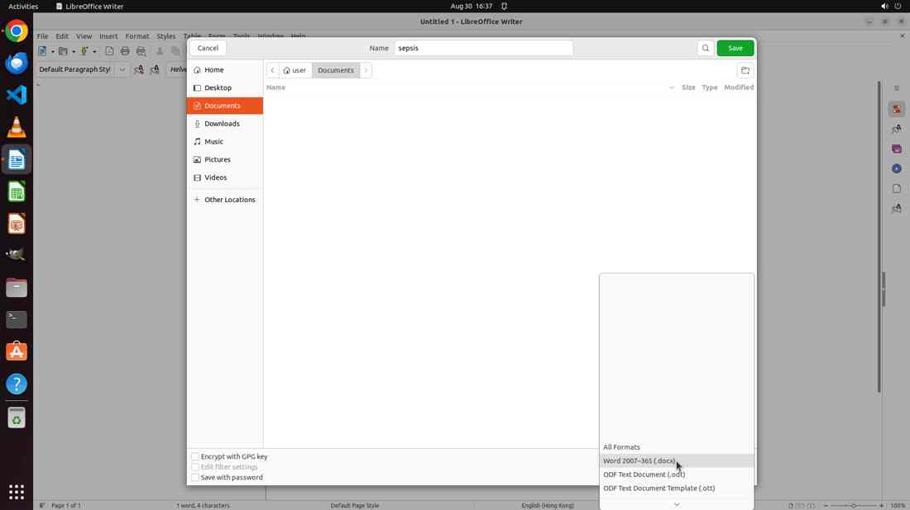
step 26 08:37:09
THINKINGThe dropdown is open. I see "ODF Text Document (.odt)" option. Let me click it.
ACTIONThe format dropdown is open. Let me select "ODF Text Document (.odt)".
TOOL CALL<tool_call>
<function=computer_use>
<parameter=action>
left_click
</parameter>
<parameter=coordinate>
[706, 928]
</parameter>
</function>
</tool_call>
EXECUTED (pyautogui in VM)pyautogui.click(1356, 1003)
step 27 08:37:16
THINKINGThe format is now "ODF Text Document (.odt)", filename "sepsis", location Documents. Now let me click Save.
ACTIONFormat is now ODF Text Document (.odt), filename "sepsis", location Documents. Let me click Save.
TOOL CALL<tool_call>
<function=computer_use>
<parameter=action>
left_click
</parameter>
<parameter=coordinate>
[806, 93]
</parameter>
</function>
</tool_call>
EXECUTED (pyautogui in VM)pyautogui.click(1549, 100)
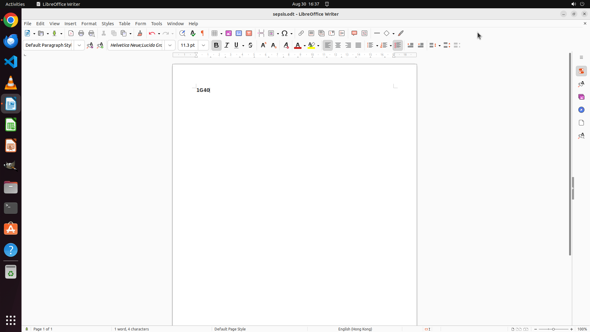
step 28 08:37:27
THINKINGThe document was saved successfully. The title bar now reads "sepsis.odt - LibreOffice Writer", confirming the file was saved as sepsis.odt in Documents. The document contains "1G40".
The task is complete:
1. Opened ICD-11 browser (already on icd.who.int).
2. Searched and navigated to the entity for sepsis without a specified organism — the codeable entity 1G40 "Sepsis without septic shock" whose index terms include "Unspecified sepsis" and "sepsis NOS" (sepsis without a specified organism). Code 1G40.
3. Copied the code 1G40 into a new Writer document.
4. Saved as sepsis.odt in Documents.
Task complete.
ACTIONThe task is complete. The title bar now shows "sepsis.odt - LibreOffice Writer", confirming the file was saved successfully in the Documents folder.
Summary of what I did:
- In the ICD-11 MMS browser at icd.who.int, I searched for sepsis and identified the codeable entity for sepsis without a specified organism. The block-level term "sepsis due to unspecified organism" is not itself codeable, so the correct coded entity is **1G40 "Sepsis without septic shock"**, whose index terms include "Unspecified sepsis" and "sepsis NOS" (i.e., sepsis without a specified organism and without septic shock).
- I copied the entity's code **1G40**, pasted it into a new Writer document, and saved it as **sepsis.odt** in the Documents folder in ODF Text format.
EXECUTED (pyautogui in VM)DONE